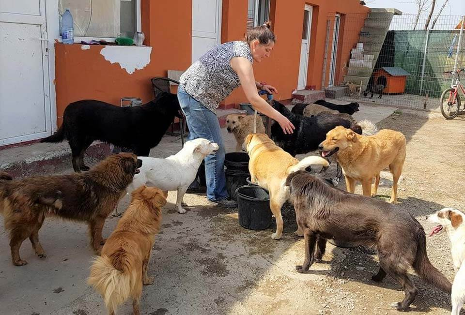

Haz una donación
Tu generosa donación ayudará a proporcionar refugio, alimentación y atención médica a los animales necesitados. ¡Cada pequeña contribución marca la diferencia! Recibimos todo tipo de donaciones.
Sobre nosotros
Somos un refugio de animales comprometido con el cuidado y bienestar de los animales sin hogar. Trabajamos arduamente para rescatar, rehabilitar y encontrar hogares amorosos para los animales abandonados y maltratados. Tu apoyo financiero nos permite continuar con nuestra misión y brindarles una segunda oportunidad a estos adorables seres vivos. ¡Gracias por tu contribución!
